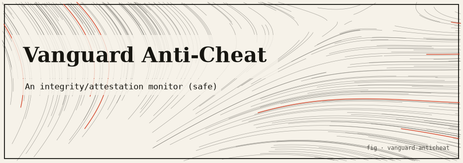

vanguard-anticheat
The honest subset of a game anti-cheat, entirely in safe userspace over a sandbox it creates and owns — memory integrity checks and process attestation, no kernel drivers.

The idea
Real game anti-cheats (including Vanguard) run kernel-level drivers to detect memory tampering. This package implements the subset of that functionality that can be done entirely in safe userspace: integrity hashing of the game’s in-memory state, process attestation (verifying that a process is who it claims to be via a challenge- response protocol), and anomaly detection on game state deltas.
The sandbox owns a simulated game state in-memory. A separate “cheat” process (also in-memory, also spawned by the tool) attempts to modify the game state without going through the legitimate API. The anti-cheat detects the modification via periodic integrity hashes and flags it.
How it works
- Game state is a struct in shared memory (in-process, not a real shared memory segment). The anti-cheat takes a SHA-256 hash of the state every N ticks.
- Legitimate mutations go through a typed API that re-hashes after each write.
- A simulated cheat thread mutates the backing memory directly (bypassing the API). The anti-cheat detects the hash mismatch on the next tick.
- Process attestation: each simulated process holds a secret token. The anti-cheat issues a challenge; correct response proves the process is legitimate.
#![forbid(unsafe_code)]— no unsafe code in the anti-cheat itself.
Run it
git clone https://github.com/caelum0x/awesome-mad-projects.git cd vanguard-anticheat cargo test cargo run # Game state hash: a3f7c29e... (tick 0) # [cheat-thread] bypassed API, mutated health: 100 → 9999 # Tick 1 integrity check: FAILED ← detected # Process flagged: cheat-thread (attestation revoked)